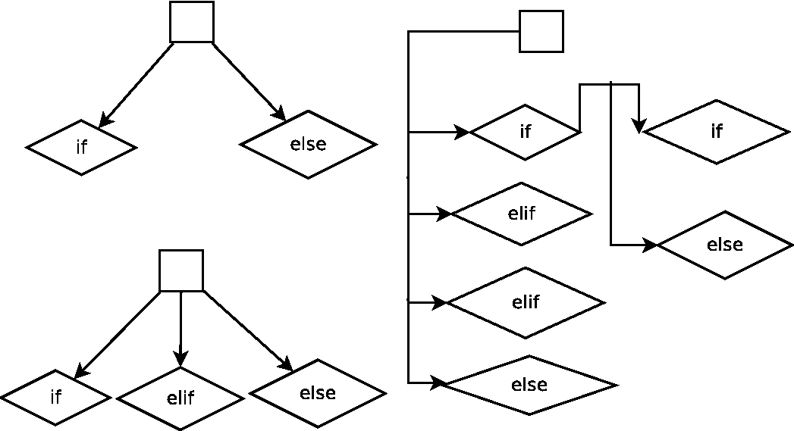
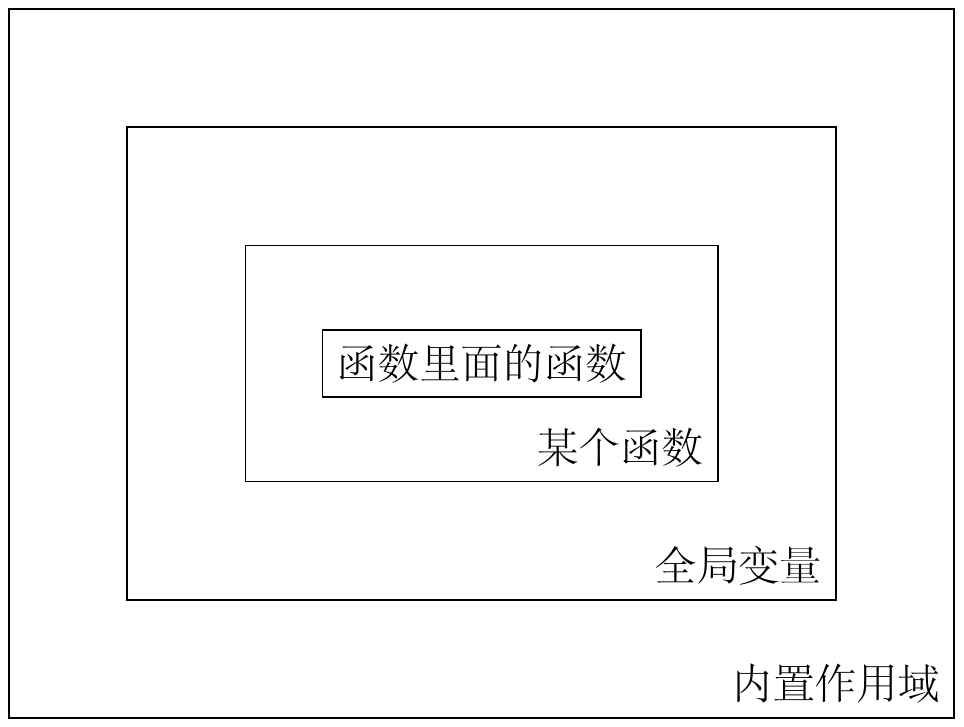
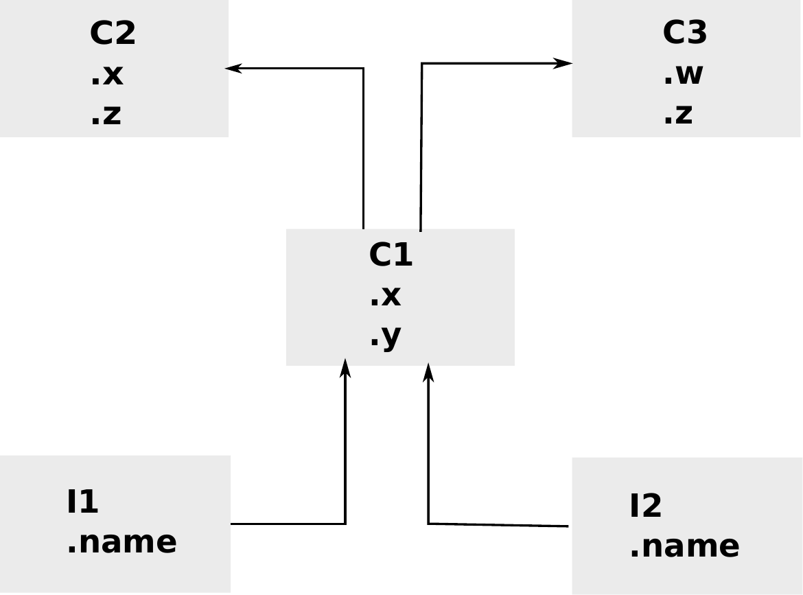
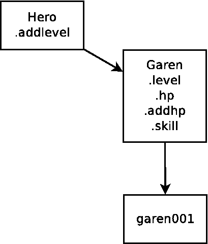

python3语言学习基础篇
1 前言
Python是个成功的脚本语言。它最初由Guido van Rossum开发，在1991年第一次发布。Python由ABC和Haskell语言所启发。Python是一个高级的、通用的、跨平台、解释型的语言。一些人更倾向于称之为动态语言。它很易学，Python是一种简约的语言。它的最明显的一个特征是，不使用分号或括号，Python使用缩进。现在，Python由来自世界各地的庞大的志愿者维护。
python现在主要有两个版本区别，python2和python3。作为新学者推荐完全使用python3编程，本文档完全基于python3。
完全没有编程经验的人推荐简单学一下c语言和scheme语言（就简单学习一下这个语言的基本概念即可）。相信我学习这两门语言不会浪费你任何时间，其中scheme语言如果你学得深入的话甚至编译器的基本原理你都能够学到。了解了这两门语言的核心理念，基本上任何语言在你看来都大同小异了。
1.1 进入python的REPL环境
在ubuntu系统下打开终端输入python即进入python语言的REPL环境，目前默认的是python2。你可以运行：
python --version
来查看确认一下。要进入python3在终端中输入
python3
python3即可。
1.2 python3命令行用法
命令行的一般格式就是：
python3 [可选项] test.py [可选参数1 可选参数2]
同样类似的运行 python3 --help 即可以查看python3命令的一些可选项。比如加入 -i 选项之后，python执行完脚本之后会进入REPL环境继续等待下一个命令，这个在最后结果一闪而过的时候有用。
上面的命令行接受多个参数都没有问题的，不会报错，哪怕你在py文件并没有用到他们。在py文件中要使用他们，首先导入sys模块，然后 sys.argv[0] 是现在这个py文件在系统中的文件名，接下来的 sys.argv[1] 就是之前命令行接受的第一个参数，后面的就依次类推了。
1.3 geany的相关配置
geany的其他配置这里不做过多说明，就自动执行命令默认的应该是python2，修改成为：
python3 -i %f
即可。
1.4 代码注释
python语言的注释符号和bash语言（linux终端的编程语言）一样用的是 # 符号来注释代码。然后py文件开头一般如下面代码所示：
#!/usr/bin/env python3 #-*-coding:utf-8-*-
其中代码第一行表示等下如果py文件可执行模式执行那么将用python3来编译 1 ，第二行的意思是py文件编码是utf-8编码的，python3直接支持utf-8各个符号，这是很强大的一个更新。
多行注释可以利用编辑器快速每行前面加上 # 符号。
1.5 Unicode码支持
前面谈及python3是可以直接支持Unicode码的，如果以可执行模式加载，那么第二行需要写上：
#-*-coding:utf-8-*-
这么一句。
读者请实验下面这个小例子，这将打印一个笑脸符号：
#!/usr/bin/env python3
#-*-coding:utf-8-*-
print('\u263a')
☺ >>>
上面的数字就是笑脸符号具体的Unicode码（十六进制）。
1.6 代码多行表示一行
这个技巧防止代码越界所以经常会用到。用反斜线 \ 即可。不过更常用的是将表达式用圆括号 ( ) 括起来，这样内部可以直接换行并继续。在python中任何表达式都可以包围在圆括号中。
1.7 一行表示多行
python中一般不用分号，但是分号的意义大致和bash或者c语言中的意义类似，表示一行结束的意思。其中c语言我们知道是必须使用分号的。
1.8 输入和输出
1.8.1 最基本的input和print命令
input函数请求用户输入，并将这个值赋值给某个变量。注意赋值之后类型是字符串，但后面你可以用强制类型转换——int函数（变成整数），float函数（变成实数），str函数（变成字符串）——将其转变过来。print函数就是一般的输出函数。
读者请运行下面的例子：
x=input('请输入一个实数：')
string='你输入的这个实数乘以2等于：'+ str(float(x)*2)
print(string)
1.9 __main__ 和 __name__
按照 这个网站 的讲解，如果当前这个py文件是被执行的，那么 __name__ 在本py文件中的值是 __main__ ，如果这个py文件是被作为模块引入的，那么 __name__ 在那个py文件中的值是本py文件作为模块的模块名。比如说你随便新建一个test.py文件，这个py文件里面就简单打印 __name__ 的值，这个时候你会发现 __name__ 的值是字符"test"，如果是mymodule模块里的mymod.py文件，那么在这个py文件里面其 __name__ 的值是"mymodule.mymod"。一个很有用的用法是 self = sys.modules[__name__] ，这样self就表示本模块对象自身了。
2 程序中的操作对象
python和c语言不同，c 是什么 int x = 3 ，也就是这个变量是整数啊，字符啊什么的都要明确指定，python不需要这样做，只需要声明 x ＝ 3 即可。但是我们知道任何程序语言它到最后必然要明确某一个变量（这里也包括后面的更加复杂的各个结构对象）的内存分配，只是python语言帮我们将这些工作做了，所以就让我们省下这份心吧。
''' 这是一个多行注释
你可以在这里写上很多废话
'''
x = 10
print(x,type(x))
python程序由各个模块（modules）组成，模块就是各个文件。模块由声明（statements）组成，声明由表达式（expressions）组成，表达式负责创造和操作对象（objects）。在python中一切皆对象。python语言内置对象（数值、字符串、列表、数组、字典、文件、集合、其他内置对象。）后面会详细说明之。
2.1 赋值
python中的赋值语法非常的简单，x=1，就是一个赋值语句了。和c语言不同，c是必须先声明int x之类，开辟一个内存空间，然后才能给这个x赋值。而python的x=1语句实际上至少完成了三个工作：一，判断1的类型（动态类型语言必须要这步）；二，把这个类型的对象存储在内存里面；三，创建x这个名字和这个名字指向这个内存，x似乎可以对应为c语言的指针对象。
2.1.1 序列赋值
x,y=1,'a'
[z,w]=['b',10]
print(x,y,z,w)
1 a b 10 >>>
我们记得python中表达式可以加上圆括号，所以这里 x,y 产生的是一个数组 (x,y) ，然后是对应的数组平行赋值，第二行是列表的平行赋值。这是一个很有用的技巧。
在其他语言里面常常会介绍swap函数，就是接受两个参数然后将这两个参数的值交换一下，交换过程通常要用到临时变量。而在python中不需要再创建一个临时变量了，因为序列赋值会自动生成一个临时的右边的序列（其中的变量都对应原来的原始值），然后再 一一对应 赋值（这里强调一一对应是指两边的序列长度要一致。）
2.1.1.1 交换两个元素
在python中交换两个元素用序列赋值形式是很便捷的：
>>> x = 1 >>> y = 2 >>> x,y = y,x >>> print(x,y) 2 1
这个过程显然不是先执行x=y然后执行y=x，如上所述的，程序首先右边创建一个临时的序列，其中的变量都对应原来的值，即 x,y=(2,1) ，然后再进行序列赋值。
2.1.2 同时赋相同的值
x=y='a'
z=w=2
print(x,y,z,w)
a a 2 2 >>>
这种语句形式c语言里面也有，不过内部实现机制就非常的不一样了。python当声明x=y的时候，x和y是相同的指针值，然后相同的指针值都指向了'a'这个字符串对象，也可以说x和y就是一个东西，只是取的名字不同罢了。
我们用is语句 2 来测试，显示x和y就是一个东西。
>>> x=y='a' >>> x is y True >>> x == y True
因为python中一切皆为对象，我们可以做如下这个实验，来创建一个抽象意义上的对象。
>>> class Test: ... pass ... >>> test1 = test2 = Test() >>> test1 is test2 True >>> test1 == test2 True >>> test1 = Test() >>> test2 = Test() >>> test1 == test2 False >>> test1 is test2 False
当然如果两个变量指向的本来就是同一对象，那么它们彼此当然是相等的，也就是 == 比较为True。然后我们看到
>>> x = [1,2,3] >>> y = [1,2,3] >>> x == y True >>> x is y False
这里创建了两个列表对象，采用如上声明并没有指向同一个内存对象。然后 == 返回True是由列表对象具体的 __eq__ 内置方法确定的。到目前为止 so far so good。但是有一个小插曲小意外。我们看:
>>> x = 1 >>> y = 1 >>> x is y True
看到这里你可能会说，好吧，数值和字符串可能不是对象，但不是的，我们要记住python中一切皆对象。然后看:
>>> x = 1000 >>> y = 1000 >>> x is y False
请读者参看 这个网页 ，其中答案的字符串部分似乎在python3中已经变动了，分界点就是256
>>> x = 256 >>> y = 256 >>> x is y True >>> x = 257 >>> y = 257 >>> x is y False
这个和python具体的底层实现细节相关了。总之读者请记住 同时赋某一个相同的值，这几个变量实际上都指向的是一个东西。然后比较None的时候推荐用 x is None 语法，其他相似判断都推荐用 == 比较判断。
2.1.3 增强赋值语句
x=x+y可以写作x += y。类似的还有：
+= -= *= /= &= |= ^= %= >>= <<= **= //=
2.1.4 序列解包赋值
具体内容请参看后面的 序列解包赋值 这一小节。
2.1.5 可迭代对象的迭代赋值
在我们对python语言有了深入的了解之后，我们发现python中迭代思想是深入骨髓的。我们在前面接触了序列的赋值模式之后，发现似乎这种赋值除了临时创建右边的序列之外，还似乎与迭代操作有关，于是我们推测python的这种平行赋值模式可以扩展到可迭代对象，然后我们发现确实如此！
>>> x,y,z= map(lambda x : x+2,[-1,0,1]) >>> print(x,y,z) 1 2 3
最后要强调一点的是确保变量名和后面的可迭代对象的输出元素数目是一致的，当然进一步扩展的序列解包赋值也是支持的：
>>> x,y,*z= map(lambda x : x+2,[-1,0,1,2]) >>> print(x,y,z) 1 2 [3, 4]
通配赋值，我喜欢这样称呼了，通配之后收集的元素在列表里面；而函数参数的通配传递，收集的元素是在元组里面。
最后我们总结到，可迭代对象的赋值就是迭代操作加上各个元素的一对一的赋值操作。
2.2 数值
python的数值的内置类型有：int，float，complex等3。python的基本算术运算操作有加减乘除（+ - * /）。然后'='表示赋值，类似数学书上的中缀表达式和优先级和括号法则等，这些都是一般编程语言说到烂的东西了。
print((1+2)*(10-5)/2) print(2**100)
2.2.1 二进制八进制十六进制
二进制的数字以0b（零比）开头，八进制的数字以0o（零哦）开头，十六进制的数字以0x（零艾克斯）开头。
0b101010, 0o177, 0x9ff
以二进制格式查看数字使用bin命令，以十六进制查看数字使用hex命令。
>>> bin(42) '0b101010' >>> hex(42) '0x2a'
2.2.1.1 进制转换小程序
number=input("请输入一个数字：")
number= eval(number)
radix= input('''请输入你想转换的进制系统
2 表示 二进制
8 表示 八进制
16 表示 十六进制
''')
radix =eval(radix)
while True:
if radix == 2:
print(bin(number))
break
elif radix == 8:
print(oct(number))
break
elif radix == 16:
print(hex(number))
break
else:
print("sorry you input the wrong radix")
程序运行的情况如下所示：
请输入一个数字：20 请输入你想转换的进制系统 2 表示 二进制 8 表示 八进制 16 表示 十六进制 8 0o24
此外基于字符串的进制转换可以用字符串的format方法来处理之。
2.2.2 数学幂方运算
\(x^y\) ，x的y次方如上面第二行所述就是用 x**y 这样的形式即可。此外pow函数作用是一样的， pow(x,y) 。
2.2.3 数值比较
数值比较除了之前提及的>，<，==之外，>=，<=，!=也是有的（大于等于，小于等于，不等于）。此外python还支持连续比较，就是数学格式 a<x<b ，x在区间 \((a,b)\) 的判断。在python中可以直接写成如下形式： a<x<b 。这实际实现的过程就是两个比较操作的进一步与操作。
2.2.4 相除取商或余
就作为正整数相除使用 x//y 得到的值意义还是很明显的就是 商 。带上负号感觉有点怪了，这里先略过。相关的还有 取余 数或者人们常说的 取模 ，就是 x%y ，这样就得到x除以y之后的余数了，同样带上负号情况有变，这里先略过。
2.2.5 复数
python直接支持复数， 复数的写法是类似 1+2j 这样的形式，然后如果z被赋值了一个复数，这样它就是一个复数类型，那么这个类具有两个属性量， real 和 imag 。也就是使用 z.real 就给出这个复数的实数部。imag是imaginary number的缩写，虚数，想像出来的数。
2.2.6 abs函数
大家都知道abs函数是绝对值函数，这个python自带的，不需要加载什么模块。作用于复数也是可以的：
z=3+4j print(z.real,z.imag) print(abs(z))
这个和数学中复数绝对值的定义完全一致，也就是复数的模： $$\left| z \right| =\sqrt { a^{ 2 }+b^{ 2 } }$$
2.2.7 round函数
简单的理解就是这个函数实现了对数值的 四舍五入 功能。
>>> round(3.1415926) 3 >>> round(3.1415926,0) 3.0 >>> round(3.1415926,1) 3.1 >>> round(3.1415926,2) 3.14 >>> round(3.1415926,4) 3.1416
这里第二个参数接受0或者负数多少有点没意义了，一般使用还是取1或大于1的数吧，意思就是保留几位小数。
2.2.8 min，max和sum函数
2.2.9 位操作
python支持位操作的，这里简单说一下：位左移操作 << ，位与操作 & ，位或操作 | ，位异或操作 ^ 。
>>> x=0b0001 >>> bin(x << 2) '0b100' >>> bin(x | 0b010) '0b11' >>> bin(x & 0b1) '0b1' >>> bin(x ^ 0b101) '0b100'
2.2.10 math模块
在 from math import * 之后，可以直接用符号 \(pi\) 和 \(e\) 来引用圆周率和自然常数。此外math模块还提供了很多数学函数，比如：
- sqrt
- 开平方根函数，sqrt(x)。
- sin
- 正弦函数，类似的还有cos，tan等，sin(x)。
- degrees
- 将弧度转化为角度，三角函数默认输入的是弧度值。
- radians
- 将角度转化位弧度，radians(30)。
- log
- 开对数，log(x,y)，即 \(\log_y x\) ，y默认是e。
- exp
- 指数函数，exp(x)。
- pow
- 扩展了内置方法，现在支持float了。pow(x,y)
这里简单写个例子：
>>> from math import * >>> print(pi) 3.141592653589793 >>> print(sqrt(85)) 9.219544457292887 >>> print(round(sin(radians(30)),1))#sin(30°) 0.5
更多内容请参见 官方文档 。
2.2.11 random模块
random模块提供了一些函数来解决随机数问题。
- random
- random函数产生0到1之间的随机实数（包括0）。
random()->[0.0, 1.0)
- uniform
- uniform函数产生从a到b之间的随机实数（a，b的值指定，包括a。）。
uniform(a,b)->[a.0, b.0)
- randint
- randint函数产生从a到b之间的随机整数，包含a和b。
randint(a,b)->[a,b]
- choice
- choice随机从一个列表或者字符串中取出一个元素。
- randrange
- randrange函数产生从a到b之间的随机整数，步长为c（a，b，c的值指定，相当于choice(range(a,b,c))。整数之间就用randint函数吧，这里函数主要是针对range函数按照步长从而生成一些整数序列的情况。
- sample(p,k)
- sample函数从p中随机选取唯一的元素（p一般是range(n)或集合之类的，这里所谓的唯一的意思就是不放回抽样的意思，但如果p样品里面有重复的元素，最后生成的列表还是会有重复的元素的。）然后组成k长度的列表返回。
下面是一个简单的例子：
>>> from random import *
>>> print(random())
0.36882919781549717
>>> print(uniform(1,10))
2.771065174892699
>>> print(randrange(1,6))
1
>>> print(randint(1,10))
3
>>> print(choice('abcdefghij'))
j
>>> print(choice(['①','②','③']))
①
作为随机实数，所谓开始包含的那个临界值可能数学意义大于实际价值，你可以写一个类似下面的小脚本看一下，随机实数是很难随机到某个具体的数的。
from random import *
i = 0
while True:
x = uniform(0,2)
if x == 0:
print(i)
break
else:
print(x)
i += 1
从上一个例子我们看到，虽然我不确定随具体随机到某个实数的概率是不是永远也没有可能，但肯定很小很小。所以如果我们要解决某个问题，需要某个确定的概率的话还是用随机整数好一些。
更多内容请参见 官方文档 。
2.2.12 statistics模块
这个模块python3.4才加入进来。
上面的那个例子这里稍作修改，使之成为一个骰子模拟器。其中 i_list 这个列表收集多次实验中掷多少次骰子才遇到6的次数。
from random import *
i_list = []
while len(i_list) < 100:
i = 1
while True:#一次实验
x = randint(1,6)
if x == 6:
print('times:' , i)
break
else:
print(x)
i += 1
i_list.append(i)
print(i_list)
from statistics import *
print(mean(i_list))#平均值
print(median(i_list))#中位数，去掉最高最低...
statistics模块中的 mean 函数接受一组数值列表，然后返回这组数值的平均值。而 median 函数返回的是统计学上所谓的中位数，你可以简单看作一组数字不断的去掉一个最高和最低，然后剩下来的一个或者两个（两个要取平均值）的数值的值。
更多内容请参见 官方文档 。
2.3 序列
字符串，列表，元组（tuple，这里最好翻译成元组，因为里面的内容不一定是数值。）都是序列（sequence）的子类，所以序列的一些性质他们都具有，最好在这里一起讲方便理解记忆。
2.3.1 len函数
len函数返回序列所含元素的个数：
string001='string'
list001=['a','b','c']
tuple001=(1,2,3,4)
for x in [string001,list001,tuple001]:
print(len(x))
6 3 4 >>>
2.3.2 调出某个值
对于序列来说后面跟个方括号，然后加上序号（程序界的老规矩，从0开始计数。），那么调出对应位置的那个值。还以上面那个例子来说明。
string001='string'
list001=['a','b','c']
tuple001=(1,2,3,4)
for x in [string001,list001,tuple001]:
print(x[2])
r c 3 >>>
2.3.2.1 倒着来
倒着来计数-1表示倒数第一个，-2表示倒数第二个。依次类推。
string001='string'
list001=['a','b','c']
tuple001=(1,2,3,4)
for x in [string001,list001,tuple001]:
print(x[-1],x[-2])
g n c b 4 3 >>>
2.3.3 调出多个值
前面不写表示从头开始，后面不写表示到达尾部。中间加个冒号的形式表示从那里到那里。这里注意后面那个元素是 不包括 进来，看来python区间的默认含义都是包头不包尾。这样如果你想要最后一个元素也进去，只有使用默认的不写形式了。
string001='string'
list001=['a','b','c']
tuple001=(1,2,3,4)
for x in [string001,list001,tuple001]:
print(x[1:3],x[-2:-1],x[:-1],x[1:],x[1:-1])
tr n strin tring trin ['b', 'c'] ['b'] ['a', 'b'] ['b', 'c'] ['b'] (2, 3) (3,) (1, 2, 3) (2, 3, 4) (2, 3) >>>
用数学半开半闭区间的定义来理解这里的包含关系还是很便捷的。
- 首先是数学半开半闭区间，左元素和右元素都是之前叙述的对应的定位点。左元素包含右元素不包含。
- 其次方向应该是从左到右，如果定义的区间是从右到左，那么将产生空值。
- 如果区间超过，那么从左到右包含的所有元素就是结果， 不会返回错误 。
- 最后如果左右元素定位点相同，那么将产生空值，比如：
string001[2:-4]，其中2和-4实际上是定位在同一个元素之上的。额外值得一提的列表插入操作，请参看 列表插入操作 这一小节。
2.3.4 序列反转
这是python最令人叹为观止的地方了，其他的语言可能对列表啊什么的反转要编写一个复杂的函数，我们python有一种令人感动的方法。
string001='string'
list001=['a','b','c']
tuple001=(1,2,3,4)
for x in [string001,list001,tuple001]:
print(x[::-1])
gnirts ['c', 'b', 'a'] (4, 3, 2, 1) >>>
之前在range函数的介绍时提及序列的索引和range函数的参数设置很是类似，这是我们可以参考理解之，序列（列表，字符串等）的索引参数 [start:end:step] 和range函数的参数设置一样，第一个参数是起步值，第二个参数是结束值，第三个参数是步长。这里end不填都好理解，就是迭代完即可，不过如果step是负数，似乎起点不填默认的是-1。
然后range函数生成的迭代器对象同样接受这种索引参数语法，看上去更加的怪异了：
>>> range(1,10,2) range(1, 10, 2) >>> range(1,10,2)[::-2] range(9, -1, -4) >>> list(range(1,10,2)) [1, 3, 5, 7, 9] >>> list(range(1,10,2)[::-2]) [9, 5, 1]
我们可以看到对range函数进行切片操作之后返回的仍然是一个range对象，经过了一些修正。似乎这种切片操作和类的某个特殊方法有关，和python的slice对象有关。
2.3.5 序列的可更改性
字符串不可以直接更改，但可以组合成为新的字符串；列表可以直接更改；元组不可以直接更改。
2.3.6 序列的加法和减法
两个字符串相加就是字符串拼接了。乘法就是加法的重复，所以一个字符串乘以一个数字就是自己和自己拼接了几次。列表还有元组和字符串一样大致情况类似。
print('abc'+'def')
print('abc'*3)
print([1,2,3]+[4,5,6])
print((0,'a')*2)
abcdef abcabcabc [1, 2, 3, 4, 5, 6] (0, 'a', 0, 'a') >>>
2.4 字符串
python语言不像c语言字符和字符串是不分的，用单引号或者双引号包起来就表示一个字符串了。单引号和双引号的区别是一般用单引号，如果字符串里面有单引号，那么就使用双引号，这样单引号直接作为字符处理而不需要额外的转义处理——所谓转义处理和其他很多编程语言一样用 \ 符号。比如要显示 " 就输入 \" 。
2.4.1 三单引号和三双引号
在单引号或者双引号的情况下，你可以使用 \n 来换行。此外还可以使用三单引号'''或者三双引号"""来包围横跨多行的字符串，其中换行的意义就是换行，不需要似前面那样的处理。
print('''\
这是一段测试文字
this is a test line
其中空白和 换行都所见所得式的保留。''')
2.4.2 startswith方法
>>> x = 'helloABC'
>>> x
'helloABC'
>>> x.startswith('hello')
True
>>> x.endswith('ABC')
True
- startswith
- 测试字符串是否以某个子字符串开始
- endswith
- 测试某个字符串是否以某个子字符串结束
2.4.3 find方法
字符串的find方法可用来查找某个子字符串，没有找到返回-1，找到了返回字符串的偏移量。
s.find('d')
2.4.4 replace方法
字符串的replace方法进行替换操作，接受两个参数：第一个参数是待匹配的子字符串，第二个参数是要替换成为的样子。
>>> print('a b 11 de'.replace('de','ding'))
a b 11 ding
>>> print('1,1,5,4,1,6'.replace('1','replaced'))
replaced,replaced,5,4,replaced,6
2.4.5 upper方法
将字符串转换成大写形式。
>>> str='str' >>> str.upper() 'STR'
类似的还有：
- lower
- 都变成小写
- capitalize
- 首字母大写，其它都小写。
2.4.6 isdigit方法
- isdigit
- 测试是不是数字
- isalpha
- 测试是不是字母
- isalnum
- 测试是不是数字或字母
值得一提的是就算是字母组成的语句，如果中间有空格isalpha方法也会返回False。
2.4.7 split方法
字符串的split方法可以将字符串比如有空格或者逗号等分隔符分割而成，可以将其分割成子字符串列表。默认是空格是分隔符。
>>> string='a=1,b=2,c=3'
>>> string.split(',')
['a=1', 'b=2', 'c=3']
2.4.7.1 splitline方法
把一个字符串按照行分开。这个可以用上面的split方法然后接受 \n 参数来实现，所不同的是splitline方法不需要接受参数：
>>> string
'this is line one\nthis is line two\nthis is line three'
>>> string.splitlines()
['this is line one', 'this is line two', 'this is line three']
>>> string.split('\n')
['this is line one', 'this is line two', 'this is line three']
2.4.8 join方法
字符串的join方法非常有用，严格来说它接受一个迭代器参数，不过最常见的是列表。将列表中的多个字符串连接起来，我们看到他采用了一种非常优雅的方式，就是只有两个字符串之间才插入某个字符，这正是我们所需要的。具体例子如下所示：
>>> list001=['a','b','c'] >>> "".join(list001) 'abc' >>> ','.join(list001) 'a,b,c'
2.4.9 strip方法
- rstrip方法
- 字符串右边的空格都删除。换行符也会被删除掉。
- lstrip方法
- 类似rstrip方法，字符串左边的空格都删除。换行符也会被删除掉。
2.4.10 format方法
字符串的format方法方便对字符串内的一些变量进行替换操作，其中花括号不带数字跟format方法里面所有的替换量，带数字0表示第一个替换量，后面类推。此外还可以直接用确定的名字引用。
>>> print('1+1={0}，2+2={1}'.format(1+1,2+2))
1+1=2，2+2=4
>>> print('my name is {name}'.format(name='Jim T Kirk'))
my name is Jim T Kirk
2.4.11 转义和不转义
\n \t 这是一般常用的转义字符，换行和制表。此外还有 \\ 输出 \ 符号。
如果输出字符串不想转义那么使用如下格式：
>>> print(r'\t \n \test') \t \n \test
2.4.12 count方法
统计字符串中某个字符或某一连续的子字符串出现的次数。
>>> string = 'this is a test line.'
>>> string.count('this')
1
>>> string.count('t')
3
2.5 列表
方括号包含几个元素就是列表。
2.5.1 列表的插入操作
字符串和数组都不可以直接更改所以不存在这个问题，列表可以。其中列表还可以以一种定位在相同元素的区间的方法来实现插入操作，这个和之前理解的区间多少有点违和，不过考虑到定位在相同元素的区间本来就概念模糊，所以在这里就看作特例，视作在这个 定位点相同元素之前 插入吧。
list001=['one','two','three']
list001[1:-2]=['four','five']
print(list001)
['one', 'four', 'five', 'two', 'three'] >>>
不过一般插入操作更多的是使用 insert 方法，而且具体定位会通过 index 方法来获得，然后第一个参数就设置该元素的index索引值，第二个参数是具体要插入的值：
>>> lst = [1,2,3,4,5] >>> i = lst.index(3) >>> lst.insert(i,6) >>> lst [1, 2, 6, 3, 4, 5]
这样就是在你查找到的该元素的前面插入某个值。
extend 方法用于列表后面扩展附加多个元素，其似乎和列表之间的加法重合了，比如 list.extend([4,5,6]) 就和 list=list+[4,5,6] 大致类似的，但extend方法是破坏性的（也就是原列表的值被改变了）。
2.5.2 append方法
python的append方法就是在最后面加 一个元素 ，如果你append一个列表那么这一个列表整体作为一个元素。然后append方法会永久的改变了该列表对象的值。
记住，append等等原处修改列表的方法都是没有返回值的。
>>> list = [1,2,3,4] >>> list.append(5) >>> list [1, 2, 3, 4, 5]
如果你希望不改动原列表的附加，请使用加法来操作列表。
2.5.3 reverse方法
reverse方法不接受任何参数，直接将一个列表 永久性地 翻转过来。如果你希望不改变原列表的翻转，有返回值，请使用如下方法：
>>> list [1, 2, 3, 4, 5] >>> listNew = list[::-1] >>> list [1, 2, 3, 4, 5] >>> listNew [5, 4, 3, 2, 1]
2.5.4 copy方法
copy方法复制返回本列表。
2.5.5 sort方法
也就是排序， 永久性 改变列表。默认是递增排序，可以用 reverse=True 来调成递减排序。
默认的递增排序顺序如果是数字那么意思是数字越来越大，如果是字符那么是按照utf-8编码递增来排序的。如果列表一些是数字一些是字符会报错。
>>> list = ['a','ab','A','123','124','5'] >>> list.sort() >>> list ['123', '124', '5', 'A', 'a', 'ab']
sort方法很重要的一个可选参数 key=function ，这个function函数就是你定义的函数（或者在这里直接使用lambda语句。），这个函数只接受一个参数，就是排序方法（在迭代列表时）接受的当前的那个元素。下面给出一段代码，其中tostr函数将接受的对象返回为字符，这样就不会出错了。
def tostr(item):
return str(item)
list001 = ['a','ab','A',123,124,5]
list001.sort(key=tostr)
print(list001)
2.5.5.1 sorted函数
sorted函数在这里和列表的sort方法最大的区别是它返回的是 一个新的列表 而不是原处修改。其次sorted函数的第一个参数严格来说是所谓的可迭代对象，也就是说它还可以接受除了列表之外的比如 元组字典 等可迭代对象。至于用法他们两个差别不大。
>>> sorted((1,156,7,5))
[1, 5, 7, 156]
>>> sorted({'andy':5,'Andy':1,'black':9,'Black':55},key=str.lower)
['Andy', 'andy', 'black', 'Black']
上面第二个例子调用了 str.lower 函数，从而将接受的item，这里比如说'Andy'，转化为andy，然后参与排序。也就成了对英文字母大小写不敏感的排序方式了。
2.5.5.2 字典按值排序
同样类似的有字典按值排序的方法，参考了 这个网站 ：
>>> sorted({'andy':5,'Andy':1,'black':9,'Black':55}.items(),key=lambda i: i[1])
[('Andy', 1), ('andy', 5), ('black', 9), ('Black', 55)]
这个例子先用字典的items方法处理返回(key,value)对的可迭代对象，然后用后面的lambda方法返回具体接受item的值，从而根据值来排序。
2.5.5.3 中文排序
下面这个例子演示了如何对中文名字排序。整个函数的思路就是用 pypinyin （一个第三方模块），将中文姓名的拼音对应出来，然后组成一个列表，然后根据拼音对这个组合列表排序，然后生成目标列表。
list001=['张三','李四','王二','麻子','李二','李一']
def zhsort(lst):
from pypinyin import lazy_pinyin
pinyin=[lazy_pinyin(lst[i]) for i in range(len(lst))]
lst0=[(a,b) for (a,b) in zip(lst,pinyin)]
lst1= sorted(lst0, key=lambda d:d[1])
return [x[0] for x in lst1]
print(zhsort(list001))
\end{tcbpython}
['李二', '李四', '李一', '麻子', '王二', '张三']
2.5.6 删除某个元素
- 赋空列表值，相当于所有元素都删除了。
- pop方法：接受一个参数，就是列表元素的定位值，然后那个元素就删除了，方法并返回那个元素的值。如果不接受参数默认是删除最后一个元素。
- remove方法：移除第一个相同的元素，如果没有找到相同的元素，则返回异常。
- del函数：删除列表中的某个元素。
>>> list001=['a','b','c','d','e']
>>> list001.pop(2)
'c'
>>> list001
['a', 'b', 'd', 'e']
>>> list001.pop()
'e'
>>> list001
['a', 'b', 'd']
>>> list001.remove('a')
>>> list001
['b', 'd']
>>> del list001[1]
>>> list001
['b']
2.5.7 count方法
统计某个元素出现的次数。
>>> list001=[1,'a',100,1,1,1] >>> list001.count(1) 4
2.5.8 index方法
index方法返回某个相同元素的偏移值。
>>> list001=[1,'a',100]
>>> list001.index('a')
1
2.5.9 列表解析
def square(n):
return n*n
print(list(map(square,[1,2,3,4,5])))
print([square(x) for x in [1,2,3,4,5]])
[1, 4, 9, 16, 25] [1, 4, 9, 16, 25] >>>
map函数将某个函数应用于某个列表的元素中并生成一个map对象（可迭代对象），需要外面加上list函数才能生成列表形式。第二种方式更有python风格，是推荐使用的列表解析方法。
在python中推荐多使用迭代操作和如上的列表解析风格，因为python中的迭代操作是直接用c语言实现的。
2.5.9.1 列表解析加上过滤条件
for语句后面可以跟一个if子句表示过滤条件，看下面的例子来理解吧：
>>> [s*2 for s in ['hello','abc','final','help'] if s[0] == 'h'] ['hellohello', 'helphelp']
这个例子的意思是列表解析，找到的元素进行乘以2的操作，其中过滤条件为字符是h字母开头的，也就是后面if表达式不为真的元素都被过滤掉了。
2.5.9.2 完整的列表解析结构
下面给出一个完整的列表解析结构，最常见的情况一般就一两个for语句吧，这里if外加个括号是可选项的意思。
[ expression for var1 in iterable1 [if condition1 ]
for var2 in iterable2 [if condition2 ]
........
]
这里的逻辑是从左到右第一个for语句就是最先执行的for语句，然后是第二个for语句跟着执行。
这里的iterable1是指某个可迭代对象，也就是说那些能够返回可迭代对象的函数比如map，filter，zip，range等函数都可以放进去。不过我们要克制自己在这里别写出太过于晦涩的程序了。还有for循环语句也别嵌套太多了，这样就极容易出错的。
下面这个程序大家看看：
>>> [x+str(y) for x in ['a','b','c'] for y in [1,2,3,4,5,6] if y & 1] ['a1', 'a3', 'a5', 'b1', 'b3', 'b5', 'c1', 'c3', 'c5'] >>> [x+str(y) for x in ['a','b','c'] for y in [1,2,3,4,5,6] if not y & 1] ['a2', 'a4', 'a6', 'b2', 'b4', 'b6', 'c2', 'c4', 'c6']
2.5.9.3 列表解析的好处
在熟悉列表解析的语句结构之后，一两个for语句不太复杂的情况下，还是很简单明了的。同时语法也更加精炼，同时运行速度较for循环要至少快上一倍。最后python的迭代思想深入骨髓，以后python的优化工作很多都围绕迭代展开，也就是多用列表解析会让你的代码以后可能运行的更快。
有这么多的好处，加上这么cool的pythonic风格，推荐大家多用列表解析风格解决问题。
2.5.9.4 元组的生成
这个时候需要明确加个括号表示这是一个元组对象。
>>> [(x,x**2) for x in range(5)] [(0, 0), (1, 1), (2, 4), (3, 9), (4, 16)]
2.5.10 for语句中列表可变的影响
一般情况for迭代某个可迭代对象就是可迭代对象返回一个值然后利用这个值赋值并进行下面的操作，但是列表却是一个可变的东西，如果列表在操作中被修改了，情况会怎样呢？
lst = [1,2,3,4,5]
index = 0
for x in lst:
lst.pop(index)
print(x)
1 3 5
具体这个过程的细节我不清楚，但确定的是在这里for语句并没有记忆原列表，而只是记忆了返回次数或者偏移值。
2.5.11 列表元素替换
推荐用列表解析方法来实现列表元素的替换功能。
def replace(x,a,b):
if x == a:
return b
else:
return x
lst=[1,5,4,1,6]
>>> [replace(i,1,'replaced') for i in lst] ['replaced', 5, 4, 'replaced', 6]
2.5.12 列表元素去重
列表元素去重推荐用后来的set集合对象来处理之，其会自动去除重复的元素。请参看下面的 集合 一小节。
>>> lst = [1,2,3,4,5,1,2,3,4,5] >>> [i for i in set(lst)] [1, 2, 3, 4, 5]
2.6 字典
与列表一样字典是可变的，可以像列表一样引用然后原处修改，del语句也适用。
2.6.1 创建字典
字典是一种映射，并没有从左到右的顺序，只是简单地将键映射到值。字典的声明格式如下：
dict001={'name':'tom','height':'180','color':'red'}
dict001['name']
或者创建一个空字典，然后一边赋值一边创建对应的键：
dict002={}
dict002['name']='bob'
dict002['height']=195
所以对字典内不存在的键赋值是可行的。
2.6.1.1 根据列表创建字典
如果是[['a',1],['b',2],['c',3]]这样的形式，那么直接用dict函数处理就变成字典了，如果是['a','b','c']和[1,2,3]这样的形式那么需要用zip函数处理一下，然后用dict函数处理一次就变成字典了：
>>> lst
[['a', 1], ['b', 2], ['c', 3]]
>>> dict001=dict(lst)
>>> dict001
{'a': 1, 'b': 2, 'c': 3}
zip函数的例子请参看后面的 字典解析 。
2.6.2 字典里面有字典
和列表的不同就在于字典的索引方式是根据“键”来的。
dict003={'name':{'first':'bob','second':'smith'}}
dict003['name']['first']
2.6.3 字典遍历操作
字典特定顺序的遍历操作的通用做法就是通过字典的keys方法收集键的列表，然后用列表的sort方法处理之后用for语句遍历，如下所示：
dict={'a':1,'c':2,'b':3}
dictkeys=list(dict.keys())
dictkeys.sort()
for key in dictkeys:
print(key,'->',dict[key])
警告：上面的例子可能对python早期版本并不使用，因为python中一大规则是对对象的原处修改的函数并没有返回值。上面的语句只是到了python3后期才能适用，保险起见，推荐使用sorted函数，sorted函数是默认对字典的键进行排序并返回键的值组成的列表。
dict={'a':1,'c':3,'b':2}
>>> for key in sorted(dict):
... print(key,'->',dict[key])
...
a -> 1
b -> 2
c -> 3
如果你对字典遍历的顺序没有要求，那么就可以简单的这样处理：
>>> for key in dict: ... print(key,'->',dict[key]) ... c -> 2 a -> 1 b -> 3
2.6.3.1 keys方法
收集键值，返回 可迭代对象 。
2.6.3.2 values方法
和keys方法类似，收集的值，返回 可迭代对象 。
>>> dict001.values() dict_values([3, 1, 2]) >>> list(dict001.values()) [3, 1, 2]
2.6.3.3 items方法
和keys和values方法类似，不同的是返回的是(key,value)对的 可迭代对象 。
>>> dict001.items()
dict_items([('c', 3), ('a', 1), ('b', 2)])
>>> list(dict001.items())
[('c', 3), ('a', 1), ('b', 2)]
2.6.4 字典的in语句
可以看到in语句只针对字典的键，不针对字典的值。
>>> dict001={'a':1,'b':2,'c':3}
>>> 2 in dict001
False
>>> 'b' in dict001
True
2.6.5 字典对象的get方法
get方法是去找某个键的值，为什么不直接引用呢，get方法的好处就是某个键不存在也不会出错，返回的是None值。
>>> dict001={'a':1,'b':2,'c':3}
>>> dict001.get('b')
2
>>> dict001.get('e')
2.6.6 update方法
感觉字典就是一个小型数据库，update方法将另外一个字典里面的键和值覆盖进之前的字典中去，称之为更新，没有的加上，有的覆盖。
>>> dict001={'a':1,'b':2,'c':3}
>>> dict002={'e':4,'a':5}
>>> dict001.update(dict002)
>>> dict001
{'c': 3, 'a': 5, 'e': 4, 'b': 2}
2.6.7 pop方法
pop方法类似列表的pop方法，不同引用的是键，而不是偏移地址，这个就不多说了。
2.6.8 字典解析
2.6.8.1 zip函数创建字典
可以利用zip函数来通过两个可迭代对象平行合成一个配对元素的可迭代对象，然后用dict函数将其变成字典对象。具体的理解请参看 深入理解python3的迭代 这一章。
>>> dict001=zip(['a','b','c'],[1,2,3])
>>> dict001
<zip object at 0xb7055eac>
>>> dict001=dict(dict001)
>>> dict001
{'c': 3, 'b': 2, 'a': 1}
2.7 集合
python实现了数学上的无序不重复元素的集合概念，在前面讨论列表去重元素的时候我们提到过正好可以利用集合的这一特性。
>>> list001=[1,2,3,1,2,4,4,5,5,5,7]
>>> {x for x in list001}
{1, 2, 3, 4, 5, 7}
>>> set(list001)
{1, 2, 3, 4, 5, 7}
用集合解析的形式表示出来就是强调set命令可以将任何可迭代对象都变成集合类型。当然如果我们希望继续使用列表的话使用list命令强制类型转换为列表类型即可，不过如果我们在应用中确实一致需要元素不重复这一特性，就可以考虑直接使用集合作为主数据操作类型。
集合也是可迭代对象。关于可迭代对象可以进行的列表解析操作等等就不啰嗦了。下面介绍集合的一些操作。
2.7.1 集合添加元素
值得一提的是如果想创建一个空的集合, 需要用set命令，用花括号 {} 系统会认为你创建的是空字典。然后我们看到用集合的 add 方法添加，那些重复的元素是添加不进来的。
警告：值得一提的是集合只能包括不可变类型，因此列表和字典不能作为集合内部的元素。元组不可变，所以可以加进去。还有\uwave{集合也是不可以包括进去的}，觉得这点好逊啊，数学里面的集合概念能够包含集合那是基本的特性啊，感觉这点不修正好还是用列表方便些。
>>> set001=set()
>>> set001.add(1)
>>> set001
{1}
>>> set001.add(2)
>>> set001
{1, 2}
>>> set001.add(1)
>>> set001
{1, 2}
或者使用update方法一次更新多个元素：
>>> set001=set('a')
>>> set001.update('a','b','c')
>>> set001
{'b', 'a', 'c'}
2.7.2 集合去掉某个元素
有两个集合对象的方法可以用于去掉集合中的某个元素， discard 方法和 remove 方法，其中discard方法如果删除集合中没有的元素那么什么都不会发生，而remove方法如果删除某个不存在的元素那么会产生KeyError。
>>> set001=set('hello')
>>> set001.discard('h')
>>> set001
{'e', 'o', 'l'}
>>> set001.discard('l')
>>> set001
{'e', 'o'}
remove方法与之类似就不做演示了。
2.7.3 两个集合之间的关系
2.7.3.1 子集判断
集合对象有一个issubset方法用于判断这个集合是不是那个集合的子集。
>>> set001=set(['a','b']) >>> set002=set(['a','b','c']) >>> set001.issubset(set002) True
还有更加简便的方式比较两个集合之间的关系，那就是>，<，>=，<=，==这样的判断都是适用的。也就是set001是set002的子集，它的元素set002都包含，那么 set001<=set002 ，然后真子集的概念就是 set001<set002 即不等于即可。
2.7.4 两个集合之间的操作
下面的例子演示的是两个集合之间的交集: & ，并集: | ，差集： - 。
>>> set001=set('hello')
>>> set002=set('hao')
>>> set001 & set002 #交集
{'o', 'h'}
>>> set001 | set002 #并集
{'h', 'l', 'a', 'e', 'o'}
>>> set001 - set002 #差集
{'e', 'l'}
类似的集合对象还有 intersection 方法， union 方法， difference 方法：
>>> set001=set('hello')
>>> set002=set('hao')
>>> set001.intersection(set002) #交集
{'h', 'o'}
>>> set001.union(set002) #并集
{'e', 'a', 'h', 'o', 'l'}
>>> set001.difference(set002) #差集
{'e', 'l'}
2.7.5 clear方法
将一个集合清空。
2.7.6 copy方法
类似列表的copy方法，制作一个集合copy备份然后赋值给其他变量。
2.7.7 pop方法
无序弹出集合中的一个元素，直到没有然后返回KeyError错误。
2.8 元组
圆括号包含几个元素就是元组(tuple)。元组和列表的不同在于元组是不可改变。元组也是从属于序列对象的，元组的很多方法之前都讲了。而且元组在使用上和列表极其接近，有很多内容这里也略过了。
值得一提的是如果输入的时候写的是 x,y 这样的形式，实际上表达式就加上括号了，也就是一个元组了 (x,y) 。
2.8.1 生成器表达式
类似列表解析，如果元组在这里解析也是返回的元组吗？这里并不是如此，前面谈到python中一般表达式的圆括号是忽略了的，所以这里的元组解析表示式有个更专门的名字叫做生成器表达式，它返回的是生成器对象，和生成器函数具体调用之后返回的对象是一样的。生成器对象具有 __next__ 方法，可以调用next函数。
>>> x = [i for i in [1,2,3]] >>> x [1, 2, 3] >>> y = (i for i in [1,2,3]) >>> y <generator object <genexpr> at 0xb70dbe8c>
2.9 bytes类型
2.9.1 基本编码知识
具体存储在计算机里面的都是二进制流，而如果要将其正确解析成为对应的字符，是需要建立一定的编码规则的，比如大家熟悉的ASCⅡ编码规则。ACSⅢ编码是Latin-1和utf-8等编码的子集，也就是一连串基于ACSⅡ编码的字符串用utf-8编码也能正确解析。
python2中目前也支持bytes类型了，但其只是str类型的一个别名（请参看这个网页。） 。然后python2还有一个unicode类型，由于python3字符串默认是unicode编码的，所以python3中的str可以对应python2的unicode。此外还有一个bytearray类型，目前python2也加入进来了，差别不大。
就实现上具体python2和python3底层还有什么区别不大清楚，而且大家都承认python3定义字符串str和字节流bytes这两个名字都是很好的。只是因为python2和python3在这块领域具体功能都差不多，而因为这种转变带来了困扰很多，可能也是人们迟迟不愿意接受python3的原因吧。
bytes简单的理解就是没有任何字符含义的二进制字节流。然后如这样 b'test' ，在前面加个字符b或者B，其将解析为bytes类型。
>>> x = b'test' >>> x b'test' >>> type(x) <class 'bytes'> >>> x[0] 116 >>> x[1] 101 >>> list(x) [116, 101, 115, 116] >>>
python在打印时会尽可能打印可见字符，尽管上面的x打印显示出了具体的test这个字符，但我们应该认为x是一连串的数字序列而不具有任何字符串含义，如果我们调用bytes类型的 decode 方法，那么bytes类型解码之后将变成str类型。
>>> y = x.decode('utf-8')
>>> y
'test'
>>> type(y)
<class 'str'>
当然具体编码方式是否正确，是否正确解析了原bytes字节流那又是另外一回事了。比如还可能是big5或者GB什么的编码。
此外字符串str类型有个 encode 方法可以进行编码操作从而输出对应编码的bytes字节流。
2.9.2 使用方法
我们可以如下看一下str类型和bytes类型具体有那些方法差异:
>>> set(dir('abc')) - set(dir(b'abc'))
{'isdecimal', 'casefold', '__rmod__', 'format_map', 'format', 'encode', '__mod__', 'isnumeric', 'isprintable', 'isidentifier'}
>>> set(dir(b'abc')) - set(dir('abc'))
{'decode', 'fromhex'}
我们看到bytes和str几乎拥有相同的功能，所以大部分之前学到的用于str字符串类型的那些方法同样可以用于bytes类型中。这多少有点方法泛滥了，因为bytes是字节流类型，内在是没有字符含义的，可能某些方法并不推荐使用。
比如下面的upper方法和replace方法:
>>> b't'.upper() b'T' >>> b'testst'.replace(b'st',b'oo') b'teoooo'
replace方法还可以接受，但upper方法有点过了。
然后字节流的连接可以很方便的用加法或join方法来进行，如下所示:
>>> b't' + b'e' b'te' >>> b''.join([b'a',b'c']) b'ac'
但是要注意，python2里面不管是加法还是join方法都将丢掉那个b修饰符（请参看这个网页 。）:
>>> b''.join([b'a',b'c']) 'ac' >>> b'a' + b'b' 'ab'
不过这也无关紧要，因为python2里面我们可以理解str就对应的是python3的bytes类型。这一块python2和python3分裂得很厉害，最好不要用对接的思维了，是python2就用python2的思维，是python3就用python3的思维。
其他还有很多方法包括切片操作等就不赘述了。
2.10 bytearray类型
bytearray和bytes类型类似，而且其内部支持的方法和操作也和bytes类型类似，除了其更像是一个列表，可以原处修改而字符串和bytes是不可变的。python2现在也有bytearray类型了，只是内在的文本和二进制是不分的。
2.11 文件
文件对象是可迭代对象。
2.11.1 写文件
对文件的操作首先需要用 open 函数创建一个文件对象，简单的理解就是把相应的接口搭接好。文件对象的 write 方法进行对某个文件的写操作，最后需要调用 close 方法写的内容才真的写进去了。
file001 = open('test.txt','w')
file001.write('hello world1\n')
file001.write('hello world2\n')
file001.close()
如果你们了解C语言的文件操作，在这里会为python语言的简单便捷赞叹不已。就是这样三句话：创建一个文件对象，然后调用这个文件对象的wirte方法写入一些内容，然后用close方法关闭这个文件即可。
2.11.2 读文件
一般的用法就是用 open 函数创建一个文件对象，然后用 read 方法调用文件的内容。最后记得用 close 关闭文件。
file001 = open('test.txt')
filetext=file001.read()
print(filetext)
file001.close()
此外还有 readline 方法是一行一行的读取某文件的内容。
2.11.3 open函数的处理模式
open函数的处理模式如下：
- 'r'
- 默认值，read，读文件。
- 'w'
- wirte，写文件，如果文件不存在会创建文件，如果文件已存在，文件原内容会清空。
- 'a'
- append，附加内容，也就是后面用write方法内容会附加在原文件之后。
- 'b'
- 处理模式设置的 附加 选项，'b'不能单独存在，要和上面三个基本模式进行组合，比如'rb'等，意思是二进制数据格式读。
- '+'
- 处理模式设置的 附加 选项，同样'+'不能单独存在，要和上面三个基本模式进行组合，比如'r+'等，+是updating更新的意思，也就是既可以读也可以写，那么'r+'，'w+'，'a+'还有什么区别呢？区别就是'r+'不具有文件创建功能，如果文件不存在会报错，然后'r+'不会清空文件，如果'r+'不清空文件用write方法情况会有点复杂；而'w+'具有文件创建功能，然后'w+'的write方法内容都是重新开始的；而'a+'的write方法内容是附加在原文件上的，然后'a+'也有文件创建功能。
2.11.4 用with语句打开文件
类似之前的例子我们可以用with语句来打开文件，这样就不用close方法来关闭文件了。然后with语句来提供了类似try语句的功能可以自动应对打开文件时的一些异常情况。
with open('test.txt','w') as file01:
file01.write('hello world1\n')
file01.write('hello world2\n')
with open('test.txt','r') as file01:
filetext=file01.read()
print(filetext)
2.11.5 除字符串外其他类型的读取
文本里面存放的都是字符串类型，也就是写入文件需要用str函数强行将其他类型转变成字符串类型，而读取进来想要进行一些操作则需要将字符串类型转变回去。比如用int或者float等，不过列表和字典的转变则需要 eval 函数。
eval这个函数严格来讲作用倒不是为了进行上面说的类型转换的，它就是一个内置函数，一个字符串类型python代码用eval函数处理了之后就能转变为可执行代码。
>>> eval('1+1')
2
>>> eval('[1,2,3]')
[1, 2, 3]
>>> eval("{'a':1,'b':2,'c':3}")
{'c': 3, 'b': 2, 'a': 1}
推荐使用pickle模块来处理其他类型的文件读写问题，相对来说更简单更安全。请参看 pickle模块 这一小节。
3 程序中的逻辑
3.1 布尔值
3.1.1 其他逻辑小知识
在python中，有些关于逻辑真假上的小知识，需要简单了解下。
- 数0、空对象或者其他特殊对象None值都认为是假（比如列表都是真，但空列表是假。）
- 其他非零的数字或非空的对象都认为是真
- 前面两条用bool函数可以进行强制类型转换
- 比较和相等测试会递归作用在数据结构中
- 比较和相等测试会返回True或False（1和0的custom version（翻译为定制版？））
3.1.2 None
函数如果没有return的值就会返回None值，None值是NoneType对象中的一个值，和列表的空值等是不同的，它和其他任何值都不一样的。比如re.search如果没有找到匹配就会返回None值。这个时候需要知道得是None值在逻辑上是逻辑假，not None是逻辑真。
>>> def f(): ... pass ... >>> y = f() >>> y >>> type(y) <class 'NoneType'>
在逻辑判断上如果预期程序在这里应该返回None，最好推荐还是使用 is None 来截取这个条件，直接使用结果的布尔值判断有些其他情况也会被混进来，这可能并不是你想要的。
3.2 if条件判断
python中的条件语句基本格式如下：
if test:
条件判断执行区块
也就是if命令后面跟个条件判断语句，然后记住加个冒号，然后后面缩进的区块都是条件判断为真的时候要执行的语句。
if test:
do something001
else :
do something002
这里的逻辑是条件判断，如果真，do something001；如果假，do something002。
if test001:
do something001
elif test002:
do something002
显然你一看就明白了，elif是else和if的结合。
3.2.1 逻辑与或否
and表示逻辑与，or表示逻辑或，not表示逻辑否。
下面编写一个逻辑，判断一个字符串，这个字符串开头必须是a或者b，结尾必须是s，倒数第二个字符不能是单引号'。在这里就演示一下逻辑。。
x='agais'
if ((x[0] == 'a' or x[0] == 'b')
and x[-1] =='s'
and (not x[-2] =="'")):
print('yes it is..')
3.2.2 稍复杂的条件判断
现在我们了解了if，elif和else语句，然后还了解了逻辑与或非的组合判断。那么在实际编程中如何处理复杂的条件逻辑呢？
首先能够用逻辑语句“与或非”组合起来的就将其组合起来，而不要过分使用嵌套。如下面代码所示，如果一个情况分成两部分，那么就用if…else…语句，
x=-2
if x>0:
print('x大于0')
else:
print('x小于0')
而如果一个情况分成三部分，那么就用if…elif…else语句。同一深度的这些平行语句对应的是“或”逻辑，或者说类似其他编程语言的switch语句。
x=2
if x>0:
print('x大于0')
elif x<0:
print('x小于0')
else:
print('x等于0')
我们再看一看下面的代码，这个代码是 错误的 ，两个if语句彼此并不构成逻辑分析关系。4
x=2
if x>0:
print('x大于0')
if x<0:
print('x小于0')
else:
print('x等于0')
然后我们看到下面的代码，这个例子演示的是在加深一个深度的条件判断语句它当时处于的逻辑判断情况，这个语句的条件判断逻辑是本语句的判断逻辑再和左边（也就是前面）的判断逻辑的“与”逻辑，或者说成是“交集”。比如说 print('0<x<2') 这个语句就是本语句的判断逻辑 x<2 和上一层判断逻辑 x>0 的“交集”，也就是 0<x<2。
x=-2
if x>0:
print('x大于0')
if x>2:
print('x>2')
elif x<2:
print('0<x<2')
else:
print('x=2')
elif x<0:
print('x小于0')
else:
print('x等于0')
整个过程的情况如下图所示：

为了在编程的时候对处于何种判断逻辑之下有一个清晰的认识，强烈建议读者好好思考一下。毕竟磨刀不误砍柴功。
3.2.3 try语句捕捉异常
try语句是编程中用来处理可能出现的异常或者已经出现但并不打算应付的错误最通用的方式。比如一个变量你预先想的是接受一个数值，但是用户却输入了一个字符，这个时候你就可以将这段语句包围在try里面；或者有时你在编程的时候就发现了这种情况，只是懒得理会他们，那么简单的把这块出错的语句包围在try里面，然后后面跟个except语句，打印出一个信息“出错了”，即可。用法如下所示：
while True:
x=input('请输入一个数，将返回它除以2之后的数值\n输入"quit"退出\n')
if x=='quit':
break
try :
num=float(x)
print(num/2)
except:
print('出错了')
3.2.3.1 异常处理完整语句
try:
yourCode
except yourError:
do something
except yourError2:
do something2
......
else:
do somethingN
finally:
do the funallystuff
这个语句的逻辑是试着执行try区块下的语句，如果出现异常，那么看是不是异常yourError，如果是则执行do something，如果是yourError2，则执行do something2 ……等等，如果没有异常，则执行else字句: do somethingN，如果还有异常，则这个异常将会返回（更上面的控制程序）。
那么finally语句的作用是什么呢，finally语句实际上和整个语句中异常判断情况没有关系，不管有没有异常发生，最后它都将被执行。和简单地不缩进直接写在下面的语句比起来，finally语句的特点就是就算程序发生异常了，它也会先被执行，然后再将异常上传给上面的控制程序。
else语句和finally语句是可选的，根据具体情况来看。
3.2.3.2 for里面放try语句的情况
for语句里面放上try语句还需要细讲一下。
具体try语句相关逻辑前面说过了，这里的问题是for语句的继续执行问题。首先是第一个情况，try字句里面使用return，这在函数里面是会跳出for语句的，也就是执行多次只要成功一次就会被跳出。然后错误捕捉，如果错误捕捉里面再放入一个raise语句，再抛出一个错误，这个时候for语句是会被中止的。然后抛出这个异常。然后是else字句，其逻辑是try多次没有错误，那么将会执行else字句，但是如果你try一次，然后else语句里面加入break命令，则会跳出for语句的。
这里面情况稍微有点复杂，目前我接触到的有如下两种应用:
这是一个mongodb的安全调用的函数装饰器。其在试图调用mongodb的时候，如果发生AutoReconnect异常，那么将会sleep一秒然后再去try 之前的那个调用函数。如果成功了，那么进入return，然后自然就跳出for语句了。
def safe_mongocall(call):
'''mongodb replica set assistant'''
def _safe_mongocall(*args, **kwargs):
for i in xrange(100):#
try:
return call(*args, **kwargs)
except pymongo.AutoReconnect:
import time
time.sleep(1)
print("try to connect mongodb again...")
return _safe_mongocall
第二个例子较为常用，就是在重复做某件事的时候可能会发生错误，然后捕捉这个错误，然后继续执行。然后捕捉的时候计了一下数。
def test():
failcount = 0
for i in range(src_count):
try:
do something
except Exception as ex:
failcount += 1
sucess_count = src_count - failcount
return sucess_count
3.2.4 in语句
in语句对于可迭代对象都可以做出是否某个元素包含在某个对象之中的判断。
>>> 'a' in ['a',1,2]
True
>>> dict
{'a': 1, 'c': 2, 'b': 3, 'd': 4}
>>> 'e' in dict
False
>>> '2' in dict
False
从上面例子可以看到，一般的列表判断元素是否存在和我们之前预料的一致，关于字典需要说的就是in语句 只判断键 ，不判断值。
3.3 for迭代语句
一般有内部重复操作的程序可以先考虑for迭代结构实现，实在不行才考虑while循环结构，毕竟简单更美更安全。
python的for迭代语句有点类似lisp语言的dolist和dotimes函数，具体例子如下：
>>> for x in 'abc': ... print(x) ... a b c >>>
in后面跟的是 可迭代对象，然后字符串，列表，数组都是可以的。这个语句可以看作先执行x='a'或者类似的匹配赋值操作，然后执行缩进的区块，后面依次类推。（所以for语句也支持序列解包赋值。
3.3.1 else分句
for x in 'abc':
if x == 'b':
print(x)
break
else:
print('test')
for语句加上else分句这种形式，如果for迭代完了就会执行else分句。但如果for语句还在迭代过程中，break或者return出来了，那么else分句将不会被执行。
3.3.2 range函数
range函数常和for迭代语句一起使用，其返回一个可迭代对象。
range(1,10,2)
range函数的用法如上，表示从1开始到10，步长为2，如果用list函数将其包裹，将会输出[1,3,5,7,9]。如果不考虑步长的话，这个range函数就有点类似于在序列调出多个值那一小节谈论的区间的情况。所以range(10)就可以看作[0,10)，range(1,10)就可以看作[1,10)。但是在这里再加上步长的概念和区间的概念又有所不同了。
>>> for x in range(-10,-20,-3): ... print(x) ... -10 -13 -16 -19 >>>
上面例子还演示了range的负数概念，这里如果用区间概念来考察的话，是不能理解的，之所以行得通，是因为它的步长是负数，如果不是负数，那么情况就会和之前讨论的结果类似，将是一个空值。
3.3.3 迭代加上操作
迭代产生信息流并经过某些操作之后生成目标序列，更多内容请参见列表解析一节。
>>> squares=[x**2 for x in [1,2,3,4,5]] >>> squares [1, 4, 9, 16, 25]
3.3.4 enumerate函数
enumerate函数返回一个enumerate对象，这个对象将偏移值和元素组合起来，成为一个可迭代对象了。
>>> enu = enumerate('abcd')
>>> [i for i in enu]
[(0, 'a'), (1, 'b'), (2, 'c'), (3, 'd')]
3.4 while循环
while语句用法和大多数编程语言类似，就是条件控制，循环结构。
while test:
do something
else :
do something
值得一提的是else语句和while语句属于一个整体，通常情况下while执行完了然后执行下面的语句似乎不需要加上else来控制5。不过else语句的一个功用就是如果while循环的时候遇到break那么else语句也不会执行而是直接跳过去了，见下面。
3.4.1 break命令
break跳出最近的while或者for循环结构。前面谈到了else和while语句构成一个整体的时候，break可以跳过else语句。
3.4.2 continue命令
continue命令接下来的循环结构的执行区块将不执行了，跳到条件判断那里看看是不是继续循环。如果是，那么继续循环。同样在for语句中continue命令的意思也是一样的。
3.4.3 pass命令
pass命令就是什么都不做。pass命令即可用于循环语句也可用于条件语句。
pass命令什么都不做似乎没有什么意义，不过作为一个空占位符还是很有用的。比如你编写一个大型的GUI程序，信号－槽机制都构思好了，只是对应的函数暂时还没写好，这个时候你可以将对应的函数，只是空的函数名加上pass语句写上，这样整个程序就可以继续边编写边调试了。
4 操作或者函数
函数也是一个对象，叫函数对象。函数名和变量名一样都是引用，函数名后面带个括号才真正实际执行。比如下面不带括号就只是返回了对这个函数对象的引用地址。
>>> print <built-in function print>
要理解函数也是一个对象，比如在下面的例子中，fun刚开始是一个函数列表，然后在for的迭代语句里，意思具体就是multiply这个函数对象，然后接下来又是plus这个函数对象。整个过程是对x*a然后再加上b。即 \(a*x +b\)
x = 3
def multiply(x,a):
return x*a
def plus(x,b):
return x+b
fun = [multiply , plus]
para = [3,2]
for fun,para in zip(fun,para):
x = fun(x,para)
print(x)
4.1 自定义函数
定义函数用def命令，语句基本结构如下：
def yourfunctionname(para001,para002...):
do something001
do something002
4.2 参数传递问题
函数具体参数的值是通过赋值形式6来传递的，这有助于理解后面的不定变量函数。而函数的参数名是没有意义的，这个可以用lambda函式来理解之，def定义的为有名函数，有具体的引用地址，但内部作用原理还是跟lambda无名函式一样，形式参数名是x啊y啊都无所谓。为了说明这点，下面给出一个古怪的例子：
>>> y=1 >>> def test(x,y=y): ... return x+y ... >>> print(test(4)) 5
输出结果是5。我们看到似乎函数的形式参数y和外面的y不是一个东西，同时参数的传递是通过赋值形式进行的，那么具体是怎样的呢？具体的解释就是函数的形式参数y是这个函数自己内部的 本地变量 y，和外面的y不一样，更加深入的理解请看下面的变量作用域问题。
然后还有：
>>> x=[1,2,3] >>> for x in x: ... print(x) ... 1 2 3
我们知道for语句每进行一次迭代之前也进行了一次赋值操作，所以for语句里面刚开始定义的这个x和外面的x也不是一个东西，刚开始定义的x也是for语句内部的 本地变量 。更加深入的理解请看下面的变量作用域问题。
想到这里我又想起之前编写removeduplicate函数遇到的一个问题，那就是for语句针对列表这个可变的可迭代对象的工作原理是如何的？具体请看下面的例子：
>>> lst=[1,2,3,4] >>> for x in lst: ... print(x,lst) ... del lst[-1] ... 1 [1, 2, 3, 4] 2 [1, 2, 3]
可迭代对象的惰性求值内部机制在我看来很神奇，目前还不太清楚，但从这个例子看来列表的惰性求值并没有记忆内部的数值，只是记忆了 返回返回值的次数 （合情合理），然后如果迭代产生了StopIteration异常就终止。
4.3 变量作用域问题
python的变量作用域和大部分语言比如c语言或lisp语言的概念都类似，就是函数里面是局部变量，一层套一层，里面可以引用外面，外面不可以引用里面。
具体实现机制是每个函数都有自己的命名空间，（和模块类似）就好像一个盒子一样封装着内部的变量。所谓的本地变量和函数有关，或者其他类似的比如for语句；所谓的全局变量和模块有关，更确切的表述是和文件有关，比如说在现在这个文件里，你可以通过导入其他模块的变量名，但实际上模块导入之后那些变量名都引入到这个文件里面来了。
具体实现和类的继承类似也是一种搜索机制，先搜索本地作用域（函数就是有函数作用域的情况也是盒子里面有盒子），然后是上一层(def，lambda，for)的本地作用域，然后是全局作用域，然后是内置作用域。更加的直观的说明如下图所示：

简单来说python的变量作用域问题就是：盒子套盒子，搜索是从盒子最里面然后往外面寻找，里面可以用外面的变量，外面的不可以用里面的。
4.3.1 内置作用域
内置作用域就是由一个 __builtin 模块来实现的，python的作用机制最后会自动搜索这个内置模块的变量。这个内置模块里面就是我们前面学习的那些可以直接使用的函数名，比如print，range等等之类的，然后还有一些内置的异常名。
所以我们想到即使对于这些python的内置函数我们也是可以覆盖定义的，事实确实如此：
>>> abs(-3) 3 >>> def abs(x): ... print(x) ... >>> abs(3) 3 >>> abs(-3) -3
4.3.2 global命令
如果希望函数里面定义的变量就是全局变量，在变量声明的时候前面加上 global 命令即可。
通常不建议这么做，除非你确定需要这么做，然后你需要写两行代码才能实现，意思也是不推荐你这么做。
def test():
global var
var= 'hello'
test()
print(var)
而且就算你这样做了，这个变量也只能在本py文件中被引用，其他文件用不了。
4.3.3 nonlocal命令
nonlocal命令python3之后才出现，这里实现的概念有点类似于lisp语言的闭包(closure技术)，就是如果你有某个需要，需要函数记忆一点自己的状态，同时又不想这个状态信息是全局变量，也不希望用类的方式来实现，那么就可以用nonlocal命令来简单地完成这个任务。
global意味着命名只存在于一个嵌套的模块中，而nonlocal的查找只限于嵌套的def中。要理解nonlocal首先需要理解函数里面嵌套函数的情况——也就是所谓的工厂函数，一个函数返回一个函数对象。比如说
def add(x):
x=x
def action(y):
return x+y
return action
>>> add1=add(1) >>> add1(5) 6 >>> add2=add(2) >>> add2(5) 7
这里的return action是返回一个函数对象，这样add1的实际接口是def action那里。熟悉lisp语言的明白，action外面的那个函数的变量叫做自由变量，不过嵌套函数在这里可以引用自由变量7但 不能直接修改 自由变量。如果我们声明nonlocal x，那么就可以修改嵌套函数外面声明的变量了。
def add(x):
x=x
def action(y):
nonlocal x
x=x+1
return x+y
return action
>>> add2=add(2) >>> add2(5) 8 >>> add2(5) 9 >>> add2(5) 10
然后我们看到这个生产出来的函数具有了运行上的状态性，实际上通过类也能构建出类似的效果，不过对于某些问题可能闭包方式处理显得更适合一些。
下面给出一个稍微合理点的例子：
def myrange(n):
i=n
def action():
nonlocal i
while i>0:
i=i-1
return i
return action
>>> myrange5=myrange(5) >>> myrange5() 4 >>> myrange5() 3 >>> myrange5() 2 >>> myrange5() 1 >>> myrange5() 0 >>> myrange5() >>>
下面给出类似的类的实现方法：
class myrange:
def __init__(self,n):
self.i=n
def action(self):
while self.i > 0:
self.i -= 1
return self.i
>>> myrange5=myrange(5) >>> >>> myrange5.action() 4 >>> myrange5.action() 3 >>> myrange5.action() 2 >>> myrange5.action() 1 >>> myrange5.action() 0 >>> myrange5.action() >>>
我们看到从编码思路上基本上没什么差异，可以说稍作修改就可以换成类的实现版本。推荐一般使用类的实现方法。但有的时候可能用类来实现有点不伦不类和大材小用了。这里就不做进一步讨论了，闭包思想是函数编程中很重要的一个思想，学习了解一下也好。
4.4 参数和默认参数
定义的函数圆括号那里就是接受的参数，如果参数后面跟个等号，来个赋值语句，那个这个赋的值就是这个参数的默认值。比如下面随便写个演示程序：
def test(x='hello'):
print(x)
test()
test('world')
4.5 不定参量函数
我们在前面谈到sum函数只接受一个列表，而不支持这样的形式：sum(1,2,3,4,5)。现在我们设计这样一个可以接受不定任意数目参量的函数。首先让我们看看一种奇怪的赋值方式。
4.5.1 序列解包赋值
>>> a,b,*c=1,2,3,4,5,6,7,8,9 >>> print(a,b,c,sep=' | ') 1 | 2 | [3, 4, 5, 6, 7, 8, 9] >>> a,*b,c=1,2,3,4,5,6,7,8,9 >>> print(a,b,c,sep=' | ') 1 | [2, 3, 4, 5, 6, 7, 8] | 9 >>> *a,b,c=1,2,3,4,5,6,7,8,9 >>> print(a,b,c,sep=' | ') [1, 2, 3, 4, 5, 6, 7] | 8 | 9
带上一个星号*的变量变得有点类似通配符的味道了，针对后面的序列8（数组，列表，字符串），它都会将遇到的元素收集在一个列表里面，然后说是它的。
for语句也支持序列解包赋值，也是将通配到的的元素收集到了一个列表里面，如：
>>> for (a,*b,c) in [(1,2,3,4,5,6),(1,2,3,4,5),(1,2,3,4)]: ... print(b) ... [2, 3, 4, 5] [2, 3, 4] [2, 3]
4.5.2 函数中的通配符
>>> def test(*args): ... print(args) ... >>> test(1,2,3,'a') (1, 2, 3, 'a')
我们看到类似上面序列解包赋值中的带星号表通配的概念，在定义函数的时候写上一个带星号的参量（我们可以想象在函数传递参数的时候有一个类似的序列解包赋值过程），在函数定义里面，这个args就是接受到的参量组成的 元组 。
4.5.3 mysum函数
>>> def mysum(*args): ... return sum(args[:]) ... >>> print(mysum(1,2,3,4,5,6)) 21 >>>
这样我们定义的可以接受任意参数的mysum函数，如上所示。具体过程就是将接受到的args（已成一个元组了），然后用sum函数处理了一下即可。
4.5.4 任意数目的可选参数
在函数定义的写上带上两个星号的变量 **args ，那么args在函数里面的意思就是接受到的可选参数组成的一个字典值。
>>> def test(**args):
... return args
...
>>> test(a=1,b=2)
{'b': 2, 'a': 1}
我们看到利用这个可以构建出一个简单的字典对象生成器。
4.5.5 解包可迭代对象传递参数
之前 *args 是在函数定义中，然后通配一些参数放入元组中。这里是在函数调用中，针对可迭代对象，可以用一个*星号将其所包含的元素迭代出来，然后和参数一一对应赋值。
>>> map = map(lambda x:x+2,[1,2,3]) >>> print(*map) 3 4 5 >>> print(*[1,2,3]) 1 2 3
4.5.5.1 最简单的打印文件命令
前面说到文件也是一个可迭代对象，然后如果在这里解包文件对象将是一个最简单的打印文件命令，简单得惊天地泣鬼神了…
print(*open('test.py'))
4.5.6 解包字典成为关键字参数
和上面的类似，通过**args语法可以将某个字典对象解包成为某个函数的关键字参数。还是以上面那个函数f为例子：
>>> def f(a,b,c=3):
... print(a,b,c)
>>> f(**{'c':6,'b':4,'a':2})
2 4 6
>>> f(1,2,5)
1 2 5
这个例子也告诉我们不是可选参数的a和b同样也可以通过这种字典形式复制。
4.6 参数的顺序
老实说一般参数，可选参数（关键字参数），任意（通配）参数，任意（通配）关键字参数所有这些概念混在一起非常的让人困惑。就一般的顺序是：
- 一般参数，这个如果有一定要在第一位，然后通过位置一一对应分配参数。
- 关键字参数，关键字参数跟在一般参数后面，通过匹配变量名来分配。
- 通配一般参数，其他额外的非关键字的参数分配到*args元组里面。
- 通配关键字参数，其他额外的关键字参数分配到**args字典里面，这个必须在最后面。
一般的情况就是这些吧，可能你会遇到更加困难的情况，到时候再说吧。
4.7 递归函式
虽然递归函式能够在某种程度上取代前面的一些循环或者迭代程序结构，不过不推荐这么做。这里谈及递归函式是把某些问题归结为数学函数问题，而这些问题常常用递归算法更加直观（不一定高效）。比如下面的菲波那奇函数：
def fib(n):
if n==0:
return 1
if n==1:
return 1
else:
return fib(n-1)+fib(n-2)
for x in range(5):
print(fib(x))
1 1 2 3 5 >>>
我们可以看到，对于这样专门的数学问题来说，用这样的递归算法来表述是非常简洁易懂的。至于其内部细节，我们可以将上面定义的fib称之为函式，函式是一种操作的模式，然后具体操作就是复制出这个函式（函数或者操作都是数据），然后按照这个函式来扩展生成具体的函数或者操作。
下面看通过递归函式来写阶乘函数，非常的简洁，我以为这就是最好最美的方法了。
def fact(n):
if n == 0:
return 1
else:
return n*fact(n-1)
print(fact(0),fact(10))
1 3628800 >>>
4.7.1 什么时候用递归？
最推荐使用递归的情况是这样的情况，那就是一份工作（或函数）执行一遍之后你能够感觉到虽然所有的工作没有做完，但是已经做了一小部分了，有了一定的进展了，就好比是蚂蚁吞大象一样，那么这个时候你就可以使用递归思想了。其次有的时候有那么一种情况虽然表面上看似乎并没有什么进展，但事情在发展，你能感受到有一个条件最终将会终止程序从而得到一个输出，那么这个时候就可以用递归。
递归思想最核心的两个概念就是一做了一小部分工作，你能感觉到做着做着事情就会做完了；二有一个终止判断最终将会起作用。
其实通过递归函式也可以实现类似for的迭代结构（这种情况不推荐使用递归），不过我觉得递归函式还是不应该滥用。比如下面通过递归函式生成一种执行某个操作n次的结构：
def dosomething(n):
if n==0:
pass
elif n==1:
print('do!')
else:
print('do!')
return dosomething(n-1)
print(dosomething(5))
do! do! do! do! do! None >>>
可以看到，如果把上面的print语句换成其他的某个操作，比如机器人向前走一步，那么这里dosomething换个名字向前走(5)就成了向前走5步了。
4.7.2 lisp的car-cdr递归技术
在lisp语言中， car-cdr递归技术是很重要的一门技术，它的特长就是遍历随意嵌套的列表结构可以同一对列表中的每一个元素执行某种操作。
首先我们来看下面的例子，一个把任意嵌套列表所有元素放入一个列表中的函数：
lst = [[1,2,[3]],[4,[5,[[[[10],11]]]],(1,2,3)],[{'a','b','c'},8,9]]
def is_list(thing):
return isinstance(thing, list)
def flatten(iter):
templst = []
for x in iter:
if not is_list(x):
templst.append(x)
else:
templst += flatten(x)
return templst
print(flatten(lst))
[1, 2, 3, 4, 5, 10, 11, (1, 2, 3), {'c', 'b', 'a'}, 8, 9]
>>>
这个函数的逻辑是如果是最小元素对象不是列表，那么收集进列表；如果不是，那么把它展开，这里就是调用的原函数继续展开函式。
上面的例子严格意义上来讲还不算lisp的经典car-cdr递归技术，下面给出一个典型的例子，就是复制任意嵌套结构的列表。当然列表的copy方法就可以做这个工作，这里主要通过这个例子来进一步深入car-cdr技术。
def is_list(thing):
return isinstance(thing, list)
def copy_list(lst):
if not is_list(lst):
return lst
elif lst == []:
return []
else:
return [copy_list(lst[0])] + copy_list(lst[1:])
print(copy_list([1,[2,6],3]))
[1, [2, 6], 3] >>>
这种嵌套列表的复制以及后面的修改等等操作，最合适的就是lisp的car-cdr技术了，但我不得不承认，这种递归写法是递归函式里面最难懂的了。
不管怎么严格，在这个基础之上，因为第一个if not的语句中传递下来的lst实际上已经是非列表的其他元素了，然后我们可以进行一些其他修改操作，这样在保持原列表的复杂嵌套的基础上，等于遍历的对列表中的所有元素进行了某种操作。
比如所有元素都平方：
def is_list(thing):
return isinstance(thing, list)
def square(x):
return x**2
def square_list(lst):
if not is_list(lst):
return square(lst)
elif lst == []:
return []
else:
return [square_list(lst[0])] + square_list(lst[1:])
print(square_list([1,[2,6],3]))
[1, [4, 36], 9] >>>
我们可以想像更加复杂功能的函数作用于列表中所有的元素同时又不失去原列表复杂的嵌套结构，lisp的car-cdr这种技术了解一下吧，但是不是一定要使用复杂的嵌套结构呢？也许没有必要吧。。
4.8 lambda函式
lambda λ表达式这个在刚开始介绍lisp语言的时候已有所说明，简单来说就是函数只是一个映射规则，变量名，函数名都无所谓的。这里就是没有名字的函数的意思。
具体的样子如下面所示：
>>> f=lambda x,y,z:x+y+z >>> print(f(1,2,3)) 6 >>>
lanmbda函式在有些情况下要用到，比如pyqt里面的信号－槽机制用connect方法的时候，槽比如是函数名或者无参函数，如果用户想加入参量的话，可以使用lamba函式引入。
读者如果对lambda函式表达不太熟悉强烈建议先简单学一学scheme或lisp语言。
4.9 print函数
print函数因为很常用和基础，就放在这里了。
print函数接受任意的参量，逐个打印出来。然后它还有一些关键字参数:
- sep
- 默认值是' '，也就是一个空格，如果修改为空字符串，那么逐个打印出来的字符之间就没有间隔了。
- end
- 默认值是'\n'
- file
- 默认值是sys.stdout，也就是在终端显示，你可以修改为某个文件变量，这样直接往某个文件里面输出内容。
5 类
在python中一切皆对象。前面学的那些操作对象都是python程序语言自己内部定义的对象（Object），而接下来介绍的类的语法除了更好的理解之前的那些对象之外，再就是可以创造自己的操作对象。一般面向对象(OOP)编程的基本概念这里不重复说明了，如有不明请读者自己随便搜索一篇网页阅读下即可。
5.1 python中类的结构
python中的类就好像树叶，所有的类就构成了一棵树，而python中超类，子类，实例的重载或继承关系等就是由一种搜索机制实现的：

python首先搜索self有没有这个属性或者方法，如果没有，就向上搜索。比如说实例l1没有，就向上搜索C1，C1没有就向上搜索C2或C3等。
实例继承了创造他的类的属性，创造他的类上面可能还有更上层的超类，类似的概念还有子类，表示这个类在树形层次中比较低。
well，简单来说类的结构和搜索机制就是这样的，很好地模拟了真实世界知识的树形层次结构。
上面那副图实际编写的代码如下：
class C2: ... class C3: ... class C1(C2,C3): ... l1=C1() l2=C1()
其中class语句是创造类，而C1继承自C2和C3，这是多重继承，从左到右是内部的搜索顺序（会影响重载）。l1和l2是根据类C1创造的两个实例。
对于初次接触类这个概念的读者并不指望他们马上就弄懂类这个概念，这个概念倒并一定要涉及很多哲学的纯思考的东西，也可以看作一种编程经验或技术的总结。多接触也许对类的学习更重要，而不是纯哲学抽象概念的讨论，毕竟类这个东西创造出来就是为了更好地描述现实世界的。
最后别人编写的很多模块就是一堆类，你就是要根据这些类来根据自己的情况情况编写自己的子类，为了更好地利用前人的成果，或者你的成果更好地让别人快速使用和上手，那么你需要好好掌握类这个工具。
5.2 类的最基础知识
5.2.1 类的创建
class MyClass:
something
类的创建语法如上所示，然后你需要想一个好一点的类名。类名规范的写法是首字母大写，这样好和其他变量有所区分。
5.2.2 根据类创建实例
按照如下语句格式就根据MyClass类创建了一个实例myclass001。
myclass001=MyClass()
5.2.3 类的属性
>>> class MyClass: ... name='myclass' ... >>> myclass001=MyClass() >>> myclass001.name 'myclass' >>> MyClass.name 'myclass' >>> myclass001.name='myclass001' >>> myclass001.name 'myclass001' >>> MyClass.name 'myclass'
如上代码所示，我们首先创建了一个类，这个类加上了一个name属性，然后创建了一个实例myclass001，然后这个实例和这个类都有了name属性。然后我们通过实例加上点加上name的这种格式引用了这个实例的name属性，并将其值做了修改。
这个例子简单演示了类的创建，属性添加，实例创建，多态等核心概念。后面类的继承等概念都和这些大同小异了。
5.2.4 类的方法
类的方法就是类似上面类的属性一样加上def语句来定义一个函数，只是函数在类里面我们一般称之为方法。这里演示一个例子，读者看一下就明白了。
>>> class MyClass: ... name='myclass' ... def double(self): ... self.name=self.name*2 ... print(self.name) ... >>> myclass001=MyClass() >>> myclass001.name 'myclass' >>> myclass001.double() myclassmyclass >>> myclass001.name 'myclassmyclass'
这里需要说明的是在类的定义结构里面，self代表着类自身，self.name代表着对自身name属性的引用。然后实例在调用自身的这个方法时用的是myclass001.double()这样的结构，这里double函数实际上接受的第一个参数就是自身，也就是myclass001，而不是无参数函数。所以类里面的方法（被外部引用的话）至少有一个参数self。
5.3 类的继承
实例虽然说是根据类创建出来的，但实际上实例和类也是一种继承关系，实例继承自类，而类和类的继承关系也与之类似，只是语法稍有不同。下面我们来看这个例子：
class Hero():
def addlevel(self):
self.level=self.level+1
self.hp=self.hp+self.addhp
class Garen(Hero):
level=1
hp=455
addhp=96
garen001=Garen()
for i in range(6):
print('级别:',garen001.level,'生命值：' ,garen001.hp)
garen001.addlevel()
级别: 1 生命值： 455 级别: 2 生命值： 551 级别: 3 生命值： 647 级别: 4 生命值： 743 级别: 5 生命值： 839 级别: 6 生命值： 935 >>>

这里就简单的两个类，盖伦Garen类是继承自Hero类的，实例garen001是继承自Garen类的，这样garen001也有了addlevel方法，就是将自己的level属性加一，同时hp生命值也加上一定的值，整个过程还是很直观的。
5.4 类的内置方法
如果构建一个类，就使用pass语句，什么都不做，python还是会为这个类自动创建一些属性或者方法。
>>> class TestClass:
... pass
...
>>> dir(TestClass)
['__class__', '__delattr__', '__dict__', '__dir__', '__doc__',
'__eq__', '__format__', '__ge__', '__getattribute__',
'__gt__', '__hash__', '__init__', '__le__', '__lt__',
'__module__', '__ne__', '__new__', '__reduce__',
'__reduce_ex__', '__repr__', '__setattr__',
'__sizeof__', '__str__', '__subclasshook__',
'__weakref__']
这些变量名字前后都加上双下划线是给python这个语言的设计者用的，一般应用程序开发者还是不要这么做。
这些内置方法用户同样也是可以重定义他们从来覆盖掉原来的定义，其中特别值得一讲的就是 __init__ 方法或者称之为构造函数。
5.4.1 __init__ 方法
__init__ 方法对应的就是该类创建实例的时候的构造函数。比如：
>>> class Point: ... def __init__(self,x,y): ... self.x=x ... self.y=y ... >>> point001=Point(5,4) >>> point001.x 5 >>> point001.y 4
这个例子重载了 __init__ 函数，然后让他接受三个参数，self等下要创建的实例，x，还有y通过下面的语句给这个待创建的实例的属性x和y赋了值。
5.4.2 self意味着什么
self在类中是一个很重要的概念，当类的结构层次较简单时还容易看出来， 当类的层次结构很复杂之后，你可能会弄糊涂。 self就是指现在引用的这个实例 。比如你现在通过调用某个实例的某个方法，这个方法可能是一个远在天边的某个类给出的定义，就算如此，那个定义里面的self还是指调用这个方法的那个实例，这一点要牢记于心。
比如下面这个例子：
class Test():
x = 5
def __init__(self):
self.x = 10
test = Test()
>>> test.x 10 >>> Test.x 5
其中self.x就是对应的创建的实例的属性x，而前面定义的x则是类Test的属性x。
5.4.3 类的操作第二版
现在我们可以写出和之前那个版本相比更加专业的类的使用版本了。
class Hero():
def addlevel(self):
self.level=self.level+1
self.hp=self.hp+self.addhp
class Garen(Hero):
def __init__(self):
self.level=1
self.hp=455
self.addhp=96
self.skill=['不屈','致命打击','勇气','审判','德玛西亚正义']
garen001=Garen()
for i in range(6):
print('级别:',garen001.level,'生命值：' ,garen001.hp)
garen001.addlevel()
print('盖伦的技能有：',"".join([x + ' ' for x in garen001.skill]))
级别: 1 生命值： 455 级别: 2 生命值： 551 级别: 3 生命值： 647 级别: 4 生命值： 743 级别: 5 生命值： 839 级别: 6 生命值： 935 盖伦的技能有： 不屈 致命打击 勇气 审判 德玛西亚正义 >>>
似乎专业的做法类里面多放点方法，最好不要放属性，不太清楚是什么。但确实这样写给人感觉更干净点，方法是方法，如果没有调用代码就放在那里我们不用管它，后面用了构造函数我们就去查看相关类的构造方法，这样很省精力。
5.4.4 类的操作第三版
class Unit():
def __init__(self,hp,atk,color):
self.hp=hp
self.atk=atk
self.color=color
def __str__(self):
return '生命值：{0}，攻击力：{1}，颜色：\
{2}'.format(self.hp,self.atk,self.color)
class Hero(Unit):
def __init__(self,level,hp,atk,color):
Unit.__init__(self,hp,atk,color)
self.level=level
def __str__(self):
return '级别：{0},生命值：{1}，攻击力：{2}，\
颜色：{3}'.format(self.level,self.hp,self.atk,self.color)
def addlevel(self):
self.level=self.level+1
self.hp=self.hp+self.addhp
self.atk=self.atk+self.addatk
class Garen(Hero):
def __init__(self,color='blue'):
Hero.__init__(self,1,455,56,color)
self.name='盖伦'
self.addhp=96
self.addatk=3.5
self.skill=['不屈','致命打击','勇气','审判','德玛西亚正义']
if __name__ == '__main__':
garen001=Garen('red')
garen002=Garen()
print(garen001)
unit001=Unit(1000,1000,'gray')
print(unit001)
for i in range(6):
print(garen001)
garen001.addlevel()
print('盖伦的技能有：',"".join([x + ' ' for x in garen001.skill]))
级别：1,生命值：455，攻击力：56， 颜色：red 生命值：1000，攻击力：1000，颜色： gray 级别：1,生命值：455，攻击力：56， 颜色：red 级别：2,生命值：551，攻击力：59.5， 颜色：red 级别：3,生命值：647，攻击力：63.0， 颜色：red 级别：4,生命值：743，攻击力：66.5， 颜色：red 级别：5,生命值：839，攻击力：70.0， 颜色：red 级别：6,生命值：935，攻击力：73.5， 颜色：red 盖伦的技能有： 不屈 致命打击 勇气 审判 德玛西亚正义 >>>
现在就这个例子相对于第二版所作的改动，也就是核心知识点说明之。其中函数参量列表中这样表述 color='blue' 表示blue是color变量的备选值，也就是color成了可选参量了。
5.4.5 构造函数的继承和重载
上面例子很核心的一个概念就是 __init__ 构造函数的继承和重载。比如我们看到garen001实例的创建，其中就引用了Hero的构造函数，特别强调的是 只有创造实例的时候比如这样的形式Garen()才叫做调用了Garen类的构造方法 ， 比如这里 Hero.__init__(self,1,455,56,color) 就是调用了Hero类的构造函数，这个时候需要把self写上，因为self就是最终创建的实例garen001，而不是Hero，而且调用Hero类的构造函数就必须按照它的参量列表形式来。这个概念需要弄清楚！
理解了这一点，在类的继承关系中的构造函数的继承和重载就好看了。比如这里Hero类的构造函数又是继承自Unit类的构造函数，Hero类额外有一个参量level接下来也要开辟存储空间配置好。
5.4.6 __str__ 函数的继承和重载
第二个修改是这里重定义了一些类的 __str__ 函数，通过重新定义它可以改变默认print某个类对象是的输出。默认只是一段什么什么类并无具体内容信息。具体就是return一段你想要的字符串样式即可。
6 模块
现在让我们进入模块基础知识的学习吧，建立编写自己的模块，这样不断积累自己的知识，不断变得更强。
实际上之前我们已经接触过很多python自身的标准模块或者其他作者写的第三方模块，而import和from语句就是加载模块用的。这里我们主要讨论如何自己编写自己的模块。
from语句和import语句内部作用机制很类似，只是在变量名的处理方式上有点差异（from会把变量名复制过来）。这里重点就import的工作方式说明如下：
- 首先需要找到模块文件。
- 然后将模块文件编译成位码（需要时，根据文件的时间戳。），你会看到新多出来一个
__pycache__文件夹。 - 执行编译出来的位码，创建该py文件定义的对象。
这三个步骤是第一次import的时候会执行的，第二次import的时候会跳过去，而直接引用内存中已加载的对象。
6.1 找到模块文件
python模块的搜索路径会搜索几个地方，这些地方最后都会放在sys.path这个列表里面，所以在你的py文件刚开始修改这个sys.path，append上你想要的地址也是可以的。我在这里选择了这种简单的方法，除此之外还有很多方法这里先不涉及。
比如主文件一般如下：
import os,sys sys.path.append(os.environ['HOME']+'/pymf') from pyconfig import *
这里为什么使用 from pyconfig import * 这样的语句而不是import语句呢？因为我决定整个项目的主py文件除了这一个from语句之外不会再import或者from其他模块了，其他所有模块的引用都放在pyconfig.py这个主配置文件里面。
pyconfig.py任务就是加载最常用最通用的一些模块，如果你实际编写的另外一个项目通用pyconfig文件满足不了你的要求了，那么你可以把那个pyconfig文件复制过来，然后放在你的项目文件夹里面，然后继续衍化修改。这个经验是我从 LaTeX 文档的编写中总结出来的，既满足了共性又满足了个性。
那么为什么要用from语句，很简单。如果用import语句，那么pyconfig.py文件里面import math模块，在主py文件里面引用就要使用这样的格式 pyconfig.math.pi ，这既不方便而且违背大家平时惯用的那种math.pi格式。
现在我们让可以开始编写自己的模块吧。
6.2 编写模块
well，编写模块就是一些py文件，然后模块的名字和py文件里面的内容编写好就是了。
我现在编写了一个pyconfig.py文件，放在主文件夹（ubuntu系统）的pymf文件里面的。里面定义了一个斐波拉契函数，如下所示：
def fib(n):
if n==0:
return 1
if n==1:
return 1
else:
return fib(n-1)+fib(n-2)
然后我们的测试小脚本如下：
import os,sys
sys.path.append(os.environ['HOME']+'/pymf')
from pyconfig import *
print([fib(n) for n in range(10)])
6.3 import语句
import语句的一般使用方法之前已有接触，比如import math，然后要使用math模块里面的函数或者类等需要使用这样的带点的变量名结构：math.pi。
此外import语句还有一个常见的缩写名使用技巧，比如import numpy as np，那么后面就可以这样写了， np.array，而不是numpy.array。
6.4 from语句
from语句的使用有以下两种情况：
from this import this
from what import *
第一种形式是点名只导入某个变量，第二种形式是都导入进来。我想读者肯定知道这点，使用第二种导入形式的时候要小心变量名覆盖问题，这个自己心里有数即可。
6.5 reload函数
reload函数可以重新载入某个模块，reload函数的优点就是不需要重新启动应用程序，更加合理的动态重载一些模块。reload只能用于python编写的模块，在python3中，reload函数被移到imp模块里面去了，因此首先需要import imp才能使用了。比如说：
from imp import reload
reload(somemodule)
7 参考资料
- python入门教程，python官网上的tutorial。原作者：Guido van Rossum Fred L. Drake；中文翻译：刘鑫等；版本：2013-10-28；pdf下载链接：python入门教程 。
- learning python，主要python语言参考，我主要参看了python学习手册（第四版）。原作者：Mark Lutz，中文翻译：李军，刘红伟等。
- programming python，作者Mark Lutz对python编程的进阶讨论；版本：第四版。
- python 官网上的资料 。
- 第三方模块参考手册，如numpy, scipy, matplotlib等等第三方模块官网上发布的官方参考手册。
- dive into python3，the english origin site , 这是 中文网站链接 。
- A Guide to Python's Magic Methods，作者：Rafe Kettler ,版本：2014-01-04，github 项目地址 .
- metaprogramming，the website link is here .
- Foundations of Python Network Programming ，python网络编程基础，[美] John Goerzen 著，莫迟等译 。
Footnotes:
也就是用chmod加上可执行权限那么可以直接执行了。第一行完整的解释是什么通过env程序来搜索python的路径，这样代码更具可移植性。
is语句用来测试对象的同一性，就是真正是内存里的同一个东西，而不仅仅是值相同而已。==只是确保值相同。
这些int、float等命令都是强制类型转换命令
四个甚至更多的平行或逻辑就用更多的elif，读者请自己实验一下。
最后一下while是False所以会跳转到执行else的语句那里。
整个过程有点类似前面讨论的一般赋值语句，但又有点区别的。
如果自己定义那么就是自己的本地变量了，这里的自由变量的意思是嵌套函数自己没有定义，引用母函数的变量。
似乎序列赋值内置迭代操作